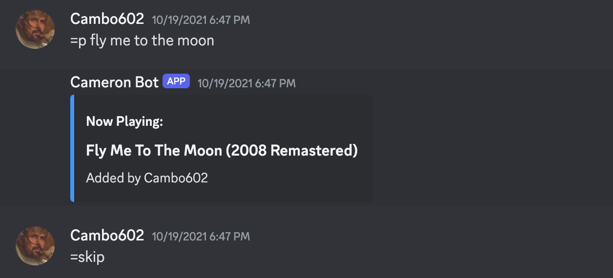
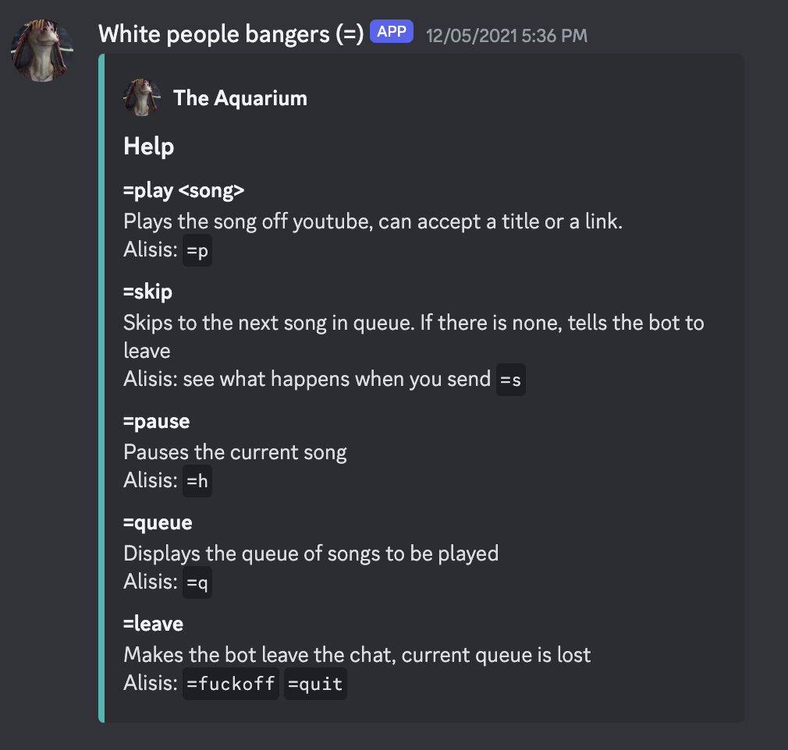

Project One: Neural Network Plays Flappy Bird
Worked with Python and NEAT to create a machine learning model to play Flappy Bird
NEAT (NeuroEvolution of Augmenting Topologies) is an algorithm for evolving artificial neural networks (ANNs) using genetic algorithms. The model was trained on a population of 100 birds, each with their own neural network. The birds were trained to play the game by using the distance to the next pipe, and the distance to the ground as inputs to the neural network. The output of the neural network was a single value, which determined if the bird should jump or not. The model was trained over 20 generations, with the top 10 birds from each generation being selected to breed the next generation. The model was able to play the game, and get a score of 100+ consistently after 20 generations of training. The birds were given a score "fitness" based on how far they got in the game, and how long they survived. The birds were then selected to breed based on their fitness score. If a generation of birds did not perform well, the model would mutate the neural networks of the birds to try and improve their performance. At the end you could save the best performing bird to play the game, and watch it play the game. Later I incremented the speed the game ran at to see how the model would perform at higher speeds. This caused the model to perform worse, as the birds were not able to react to the pipes in time. Adding speed as an input to the neural network, and training the model again allowed the birds to play the game at higher speeds.

Project Two: Discord Music Bot
Created a bot in both Python, and JavaScript that downloads and plays a youtube audio clip for users in a discord call.
Since discord stopped supporting bots that downloaded audio from youtube, I wanted to make one myself so my friends and I could continue to listen to music easily during our discord calls.
Attempt 1:
I used JavaScript with Discord.js, and FFMPEG to the first iteration of the bot. The bot listened for the use of "=" at the start of a message to execute commands. using "=play" followed by a youtube link would download the audio from the youtube video, and join the voice channel the user is in to play the song. Alternatively, you could type the name of the song after the command to search youtube for the song, and play the first result. Users could queue up songs to continue to play after the current song. Users in the voice channel could also use the command "=skip" to skip the current song.
This worked somewhat, but due to deprecated/ unsupported libraries needed, this bot would break all the time, so I decided to scrap this iteration and move to python
Attempt 2:
The next version of the bot used python, newer/ better supported libraries, and a youtube api call to streamline the processes of the previous bot. The bot was improved with new commands (seen) below, as well you could use the built in react emojis to control the bot.
